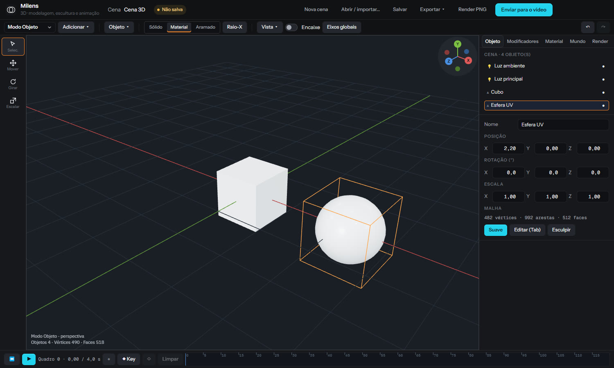

Objetos e materiais
Primitivas, texto 3D, importação de glTF e OBJ, materiais PBR.
Programa 3D leve para motion graphics: objetos, materiais, luzes e câmera. O render entra como clipe no vídeo.

Primitivas, texto 3D, importação de glTF e OBJ, materiais PBR.
Mesma lógica de keyframes do vídeo; curvas compartilhadas.
Luzes direcionais, pontuais e ambiente com sombras.
Gizmo de posição, rotação e escala com ímã.
Render no GPU com anti-aliasing; sai como clipe com alfa.
Altere a cena e o clipe atualiza na timeline.
Crie uma conta, baixe o Lite e edite o primeiro projeto em minutos. O PRO fica a uma chave de distância.
Windows 10 ou 11 · 64 bits · instalador de 118 MB